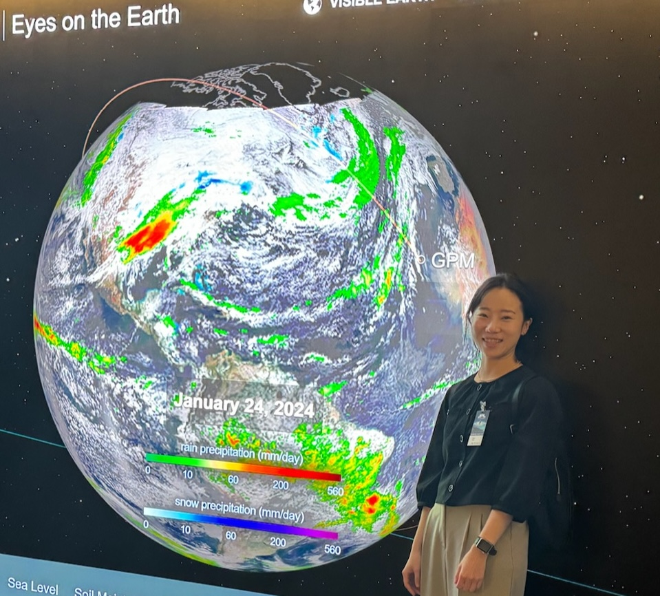
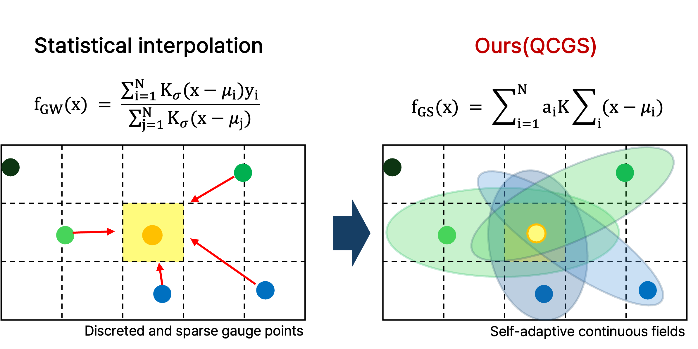
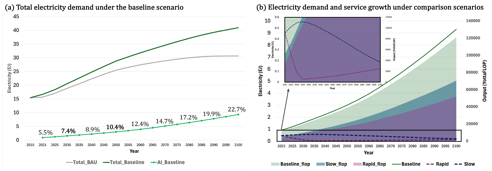
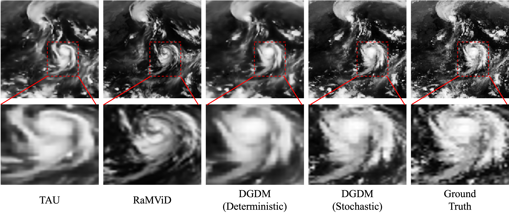
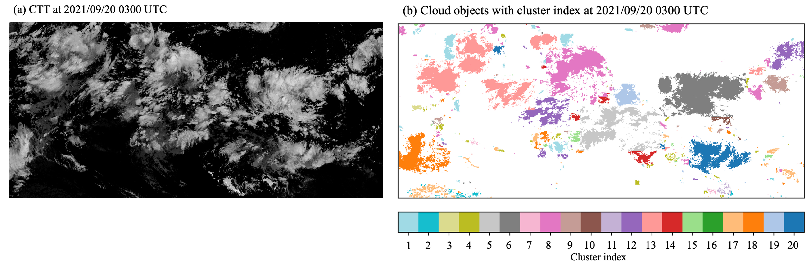

|
Doyi Kim I am a Ph.D. student at KAIST, advised by Prof. Changick Kim. I work on data-driven modeling of climate systems, with a focus on linking observation, prediction, and impact. My research integrates diverse observational data to model extreme events and their downstream risks, moving beyond forecasting toward decision-relevant climate intelligence. I am particularly interested in quantifying climate adaptation under uncertainty, incorporating economic perspectives into AI-driven climate risk analysis. |
 |
{kind=link}
Research
Topics |
Education
KAIST, Republic of Korea
Ewha Womans University, Republic of Korea
Ewha Womans University, Republic of Korea |
News[2026] Two papers accepted at ICLR 2026 (main conference & workshop). [2025] One paper accepted at AAAI 2025 (Oral). [2024] Named in Geospatial World Rising Stars 50. [2023] Winner, GeoNet Challenge (ICCV 2023). [2022] Winner, Weather4Cast Competition (NeurIPS 2022). |
Selected Publications |
|
 |
Station2Radar: Query-Conditioned Gaussian Splatting for Precipitation Field
Doyi Kim, M Seo, C Kim ICLR, 2026 [poster] A query-conditioned Gaussian splatting framework for reconstructing precipitation fields, aiming to bridge sparse and heterogeneous observations for weather applications. |
|
 |
Efficiency vs Demand in AI Electricity: Implications for Post-AGI Scaling
Doyi Kim, J Ahn, H McJeon, C Kim ICLR Post-AGI Workshop, 2026 [poster] This work examines how efficiency gains and demand growth interact in AI electricity consumption, with implications for post-AGI scaling and climate-aware energy assessment. |

|
Data-driven Precipitation Nowcasting Using Satellite Imagery
Y Park, M Seo, Doyi Kim, Y Choi AAAI Oral, 2025 A data-driven precipitation nowcasting framework based on satellite imagery, focusing on robust short-term rainfall prediction from remote sensing observations. |

|
Long-Term Typhoon Trajectory Prediction: A Physics-Conditioned Approach Without Reanalysis Data
Y Park, M Seo, Doyi Kim, H Kim, S Choi, B Choi, J Ryu, S Son, H Jeon, Y Choi ICLR Spotlight, 2024 A physics-conditioned framework for long-term typhoon trajectory prediction that avoids dependence on reanalysis data while preserving strong forecasting performance. |
|
 |
Probabilistic Weather Forecasting with Deterministic Guidance-based Diffusion Model
D Yoon, M Seo, Doyi Kim, Y Choi, D Cho ECCV, 2024 A diffusion-based probabilistic forecasting approach guided by deterministic predictions for more reliable weather uncertainty modeling. |
|
 |
Unsupervised Clustering of Geostationary Satellite Cloud Properties for Estimating Precipitation Probabilities of Tropical Convective Clouds
Doyi Kim, H Kim, Y Choi Journal of Applied Meteorology and Climatology, 2023 This paper studies unsupervised clustering of satellite cloud properties to estimate precipitation probabilities for tropical convective systems. |
Experience
SI Analytics, Earth Intelligence Division, AI Research Center
SPREP (UNEP), Climate Change Resilience - Pacific Meteorology Team |
Awards & HonorsGeospatial World Rising Stars 50, 2024 AI/ML Solutions for Climate Change Innovation Factory Challenger, ITU & UNESCO, 2023 Winner, GeoNet Challenge, ICCV 2023 Winner, Weather4Cast Competition, NeurIPS 2022 |